Sealog-Subastian
R/V Falkor (too)
Overview
Sealog SuBastian is a smart event logger for ROV SuBastian dives that couples key metadata (such as video framegrabs, vehicle position, vehicle depth, water temperature, etc.) with each event. Sealog can be configured for each cruise to better support a science party’s specific data logging needs. After each dive, Sealog creates an extensive “Dive Summary PDF” with all the events recorded during the dive, along with other useful graphics.
Orientation
Sealog can be found either at 10.23.11.25/sealog-Sub/ in any web browser, or you can use the “Sealog-Subastian” link at 10.23.11.25. Currently, Sealog can only be reached while onboard the ship.
Login
We recommend that each science party member create their own individual login for Sealog. With each event entry, along with the scientific metadata, the system will keep track of the user that submitted the entry. There is also a guest login that has access to creating events, but has restricted access to event template configurations.

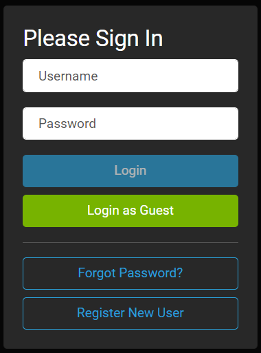
Templates
System templates are event configurations that are logged and maintained by the ship’s crew to monitor key milestones during each dive (ex. in water/out of water times, on/off bottom times, video start/stop). These events are admin access only and cannot be edited by the science party. Event templates can be edited by the science party and are meant to be tailored to meet the science parties’ data logging needs.
Event Template Configuration
This section will orient you on how to create Sealog “events.” It is important to note that the primary way of accessing exported data is via a spreadsheet. All “Event Values” and “Event Option” names should be concise.
Adding an Event Template
- Once logged in, navigate to “System Management” then select “Event Management.”
- Please note you need to be logged in as a user, “Guest” does not have event management access.
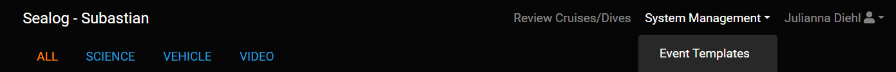
- On the right hand side, the open for “Create Event Template” will allow you to create a new event.

Event Value
Event values are a way of grouping events. For example, if you have several events that count as sampling (ex. coral collection, niskin sampling, biological sampling, etc.,) they can all be grouped as the event value “Sample.” In the dive summary pdf that gets created at the end of every dive, each Event Value will have its own section, summarizing all of the events under the particular Event Value for that dive.
The screenshot below shows an example of events that were labeled with the Event Value “Sample” and the different types denote whether they are biological, niskins, or squeezer samples in this dive.
Template Categories
Template Categories create different tabs in the home screen to further organize event buttons. In the example below, there are three template categories configured: science, vehicle, video. By default, the “All” category will always show every event button configured.
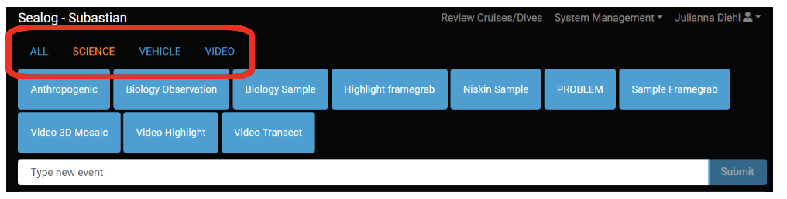
Some science parties may want to broaden their own Template Categories beyond the single “Science” that is the default configuration, ex. “Observation, Sample, etc.” The “Vehicle” and “Video” template categories contain important vehicle milestones and should be left unchanged.
Free Text Event
It is also possible to enter “free text events”. These are events that are logged without using event templates. This could be useful for quick notes, corrections, or if there is not a current event template configured for a certain situation during a dive.

Configuring Event Options
At the bottom of the “Create Event Template” the “+ Add Option” selection gives you further options to tailor each event.
Name
The name of the event option describes the specific option you are creating. For example, in the screenshot below, there are two options configured. The first option, named “Action” allows you to choose to either start or stop the dive stream radio buttons. The second option, named “Platform” allows you to choose checkboxes for the platforms that are being started.
- Event options cannot be named “id” or “comment”- these are reserved keywords.
- Each option within an event template must have a unique name.

Type
The type describes the choice of action you have for this option. The options are described in more detail below.
Static Text
Static text options are for when the value is known and should not be altered. This can be used when the act of clicking the event button is all that is needed to log the event. In the example below, the event “Vehicle on Deck” will always have a value of “On Deck.”

Text
The text option is for when the value possibilities for the option are unknown and must be manually filled out when the event is submitted. This could be used when describing file names, writing the species name of an animal observed during a dive, describing a frame grab, and more.
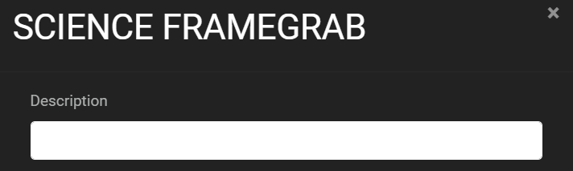
Dropdown
The dropdown option is for when the option is one out of a long list of possibilities. In the example below, a dropdown is used to describe all of the octocoral species to aid in a biological observation event.

Checkboxes
Checkboxes are for when the option is one or more of a list of possibilities. In the example below, this event allows the user to say they’re starting both Facebook and YouTube streams, or just one.
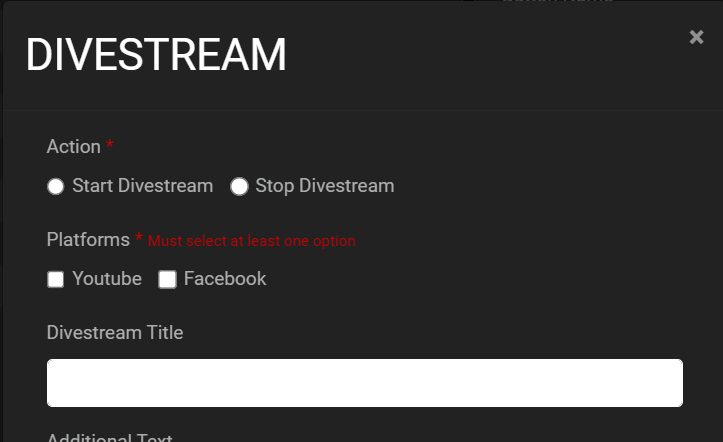
Radio Buttons
Radio buttons are for when the option is one of a short list of possibilities. In the option below, the radio buttons are used to describe an action of starting or stopping the divestream, while checkboxes are used to choose one or all of the listed platforms.
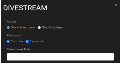
Required Button
The required button allows you to choose if an entry is necessary before the event can be created. For example, you may want to have any entry that requires a Sample ID or file name as “required” so this can’t accidentally be reported without key information.
Additional Text
Default with every Event Template, an additional text box will be added that can be used to document any extra information.
Saving and Testing Events
- Click “Create” to save your event to the “Event Templates.”
 Click to edit an Event Template.
Click to edit an Event Template. Click to test an Event Template. This is useful when making new events to make sure all your options are configured how you mean them to be.
Click to test an Event Template. This is useful when making new events to make sure all your options are configured how you mean them to be. Click to delete an Event Template. Please ask an MT if you need to delete an event template that was not created by your science party.
Click to delete an Event Template. Please ask an MT if you need to delete an event template that was not created by your science party.
Samples
Please follow the following requirements for logging your sample’s on Sealog to ensure they will be properly calculated in Sealog’s post-dive metrics. Please note that in all events that have the word “sample” in the “Event Value” will be used towards the total number of samples. For sample events, the “Event Value” should ALWAYS be “SAMPLE” and should be configured with the following options:
Type
to specify the type of sample collected i.e. “biology, geology, eDNA, Niskin, etc”. This should be configured as a required option. If the desire is to have a dedicated button for a specific sample type then set this option as “static text” with the “value” set to the sample type i.e. “eDNA”. If the event template is for multiple sample types then the “Type” option should have an option type of “dropdown” or “radio buttons”.
Sample ID
to define the sample’s unique identification. This generally will be a “text” option. This should also be configured as a required option.
Storage Location
the unique location on the vehicle where the sample is stored. This should be configured as a required option. This option should have an option type of “dropdown” or “radio buttons.” Refer to the list of standard vehicle locations (below) for how to populate the event option values. If the sample is collected with a science-supplied sampling apparatus then the option value should be a list of unique identifications for the apparatus type. Ensure that the naming convention used for any science-supplied sampling apparatus does not conflict with the standard location names.
| Full Name | ID |
|---|---|
| Bio-Box 1A | BB-1A |
| Bio-Box 1B | BB-1B |
| Bio-Box 2A | BB-2A |
| Bio-Box 2B | BB-2B |
| Bio-Box 3A | BB-3A |
| Bio-Box 3B | BB-3B |
| Bottle 01 | BTL-1 |
| Bottle 02 | BTL-2 |
| Bottle 03 | BTL-3 |
| Bottle 04 | BTL-4 |
| Bottle 05 | BTL-5 |
| Bottle 06 | BTL-6 |
| Quiver 01 | Q-1 |
| Quiver 02 | Q-2 |
| Quiver 03 | Q-3 |
| Quiver 04 | Q-4 |
| Quiver 05 | Q-5 |
| Quiver 06 | Q-6 |
| Quiver 07 | Q-7 |
| Quiver 08 | Q-8 |
| Quiver 09 | Q-9 |
| Quiver 10 | Q-10 |
| Quiver 11 | Q-11 |
| Quiver 12 | Q-12 |
| Quiver 13 | Q-13 |
| Quiver 14 | Q-14 |
| Quiver 15 | Q-15 |
| Quiver 16 | Q-16 |
| Suction 01 | S-1 |
| Suction 02 | S-2 |
| Suction 03 | S-4 |
| Suction 04 | S-4 |
| Suction 05 | S-5 |
| Suction 06 | S-6 |
| Suction 07 | S-7 |
| Suction 08 | S-8 |
Metadata
With each event logged, the following metadata gets grabbed with it:
ROV Video Frame Grabs
High resolution screen capture on all cameras.- Science Camera (4K camera)
- Situation Camera (4K camera)
- HD Quad
- Forward HD Cam, looking to Port.
- Aft HD Cam, looking Aft.
- Forward HD Cam, looking down onto the Porch.
- Forward HD Cam, looking to Stbd.
- SD Quad
- SD Teather Cam, looking aft
- SD Manifold Cam
- Suction Sampler Cam
- Port Manipulator Cam
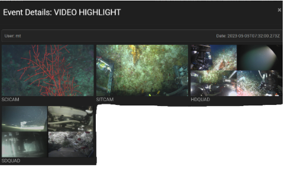
Vehicle Realtime Nav Data
- SuBastian position as calculated by its Sprint Inertial Navigation System, which takes several aiding sensors (Ultra Short BaseLine underwater positioning system, Doppler Velocity Log sensors, depth sensors) along with its own internal inertial sensors and accelerometers and uses an algorithm to output the most accurate position based on weighted sensor inputs.
- This is generally the most accurate position for the ROV, but it’s important to confirm this with the Marine Technicians during the cruise.

Vehicle Realtime USBL Data
- USBL is a method of underwater navigation that uses a transceiver head lowered under the ship that communicates with a beacon on the ROV, computing the range and angle from the transceiver head to the beacon. The software then can determine the position of the beacon on the ROV.
- This is a very accurate form of underwater navigation, but is generally not as accurate as the Sprint INS solution.
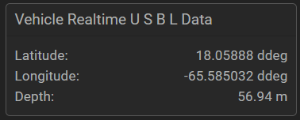
Vehicle Realtime CTD Data
- Data from a SBE49 FastCAT CTD
- Realtime measured data:
- Conductivity (uS/cm)
- Temperature ( C )
- Pressure (dbar)
- Realtime Derived Variables
- Salinity (ppt)
- Sound Velocity (m/s)
- Depth (m)
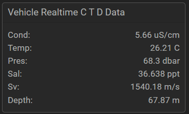
Vehicle Realtime O2 Data
Values shown are corrected to account for the effects of salinity and pressure . Raw values are available in separate data files if needed.
- Aanderaa Oxygen Optode
- Concentration: 196.9 umol
- Saturation: %

Vehicle Realtime Paro Data
- Paroscientific Digiquartz Depth Sensor (m)
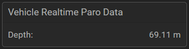
Sealog in Use
Once event templates are set up for your dive…now it’s time to put the templates in action.
Who Can Use Sealog?
- Every dive, SOI has a datalogger on watch, who works to track information specific to the vessel’s need for operation and outreach and to ensure specific vehicle milestones are set up for Sealog’s reporting mechanisms.
- It’s up to the science party to provide watchstanders who will log and keep track of scientific data logging needs. Generally at least one (if not all) watchstanders are in charge of adding events as needed during a dive.
- Any scientist onboard the ship who wants to contribute to event logging is able to do so.
What Do We Log?
- Crewmembers will log Vehicle Events that are critical to Sealog operation and reporting mechanisms. We also will log certain highlights for our Outreach team. All of our events will be available to scientists in the data exports and reports.
- We recommend that Scientists communicate internally about what kinds of events should be logged to best serve your needs. Some examples may be:
- Wide angle and/or zoom screengrabs of samples prior to sampling.
- Screengrabs to capture sample storage location.
- Screengrabs of biological observations.
- Screengrabs of anthropological observations.
When Do We Log Events?
- Sealog works best when events are logged during an active dive.
- Often scientists will assign certain individuals to be incharge of logging in Sealog per watch.
- We can also log Sealog after the fact, but the screen grabs and metadata are NOT captured.
- ASNAP is an automatic screengrab that is run at a designated timed interval during the dive. The default settings have ASNAP running once every 60 seconds, that will take a screengrab of video and metadata, so a reasonable log of the dive will exist with minimal science events logged.
Where Can We Use Sealog?
- Currently, Sealog is only available onboard Falkor (too)’s intranet.
- You can log events anywhere on the ship that has internet connectivity.
- In the future we hope to provide access to Sealog for scientists ashore.
How Should We Use Sealog?
- We provide the resource and it’s up to you as the science party to decide your cruise best practices.
- Some examples may include:
- Taking a screengrab prior to any sample.
- Adding any important information to be noted with each sample such as ID or storage location.
- Log certain observations during a dive like anthropogenic or biological.
- Duplicating key notes into a spreadsheet or logbook.
- Some examples may include:
Filter/Searching for An Event
On the main screen, the “Event History” box has a filter box. It’s important to note that this will only filter button names and wont “search” for a keyword in the text or options.
The example below shows how you can filter your events to show only the events that are associated with “VIDEO LOGGING.”
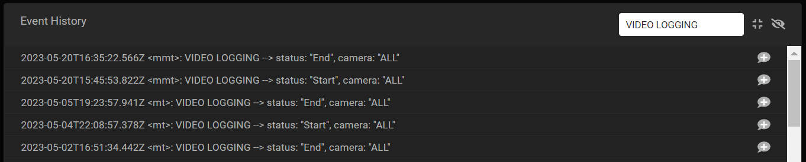
To search keywords, navigate to the following location:
- Review Cruises/Dives
- Select the appropriate year and cruise.
- Select the dive.
- Select “Review”
- The Event Filter window will appear.
- Event Value: searches only the Event Value (ex. Vehicle, Samples, etc).
- Author: searches for all entries by a certain author.
- Time: Gives you events within a certain time window.
- Freeform Text: Searches the “text” field present on all events
Data Exports
After every dive, a script is run that will summarize the dive, compile all of the metadata and send it to the PI-NAS. The following exports are available after every dive.
Dive Video
- Science Camera- SCITOO (4K)
- Situational Camera- SITTOO (4K)
- HD Quads
- SD Quads
File name: {camera}_{YYYYMMDD}T{HHMMSS}Z.mov
Images from all of the events, named by camera/date/time of the snapshot.
Dive Summary Report PDF (explained in detail below).
Vehicle Summary Report PDF (explained in detail below).
Sealog Export (CSV, JSON)
All the information from the dive, every event with associated metadata included.
Aux Data Export (JSON)
Auxiliary data sensors during the dive such as CTD, O2, High Temp probe, etc.
Event Only Export (CSV, JSON)
Export of events and their options and comments.
Event Templates (JSON)
Sealog configuration file for the dive, grabbing all of the event templates configured.
Lowering Record (JSON)
Dive number, location, and summary.
Dive Reports
Dive Summary Report
Each dive, a summary report gets produced which includes the following information and graphics:
Dive Overview
Includes dive number, location, and summary.
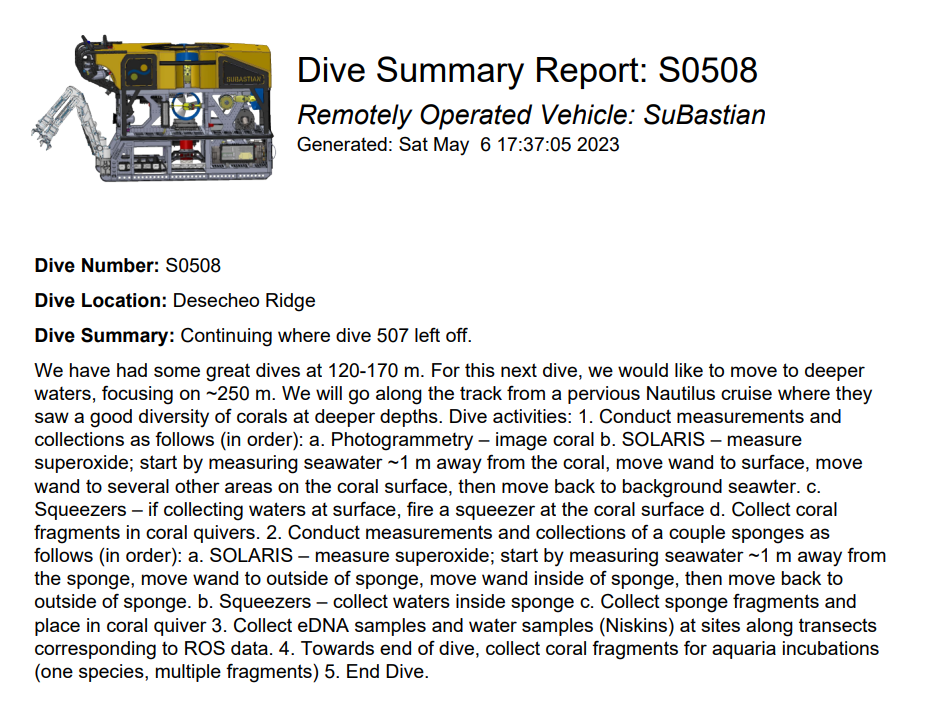
Dive Timeline
Includes key dive milestone timelines, max depth, and number of samples collected
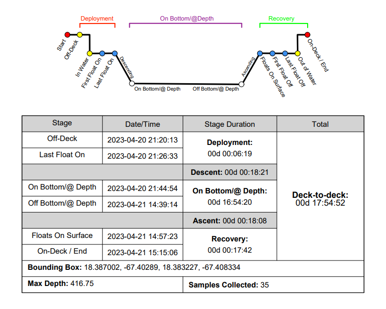
Dive Track
Visual display of the ROV’s track throughout the dive.

Depth Profile
Comparison of all the depth sensor’s dive profile
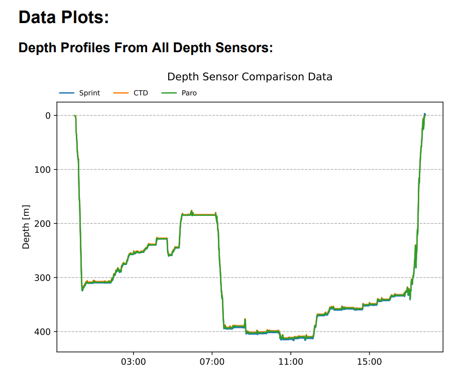
CTD Profile
Profiles of conductivity, temperature, salinity and depth for the descents and ascents.
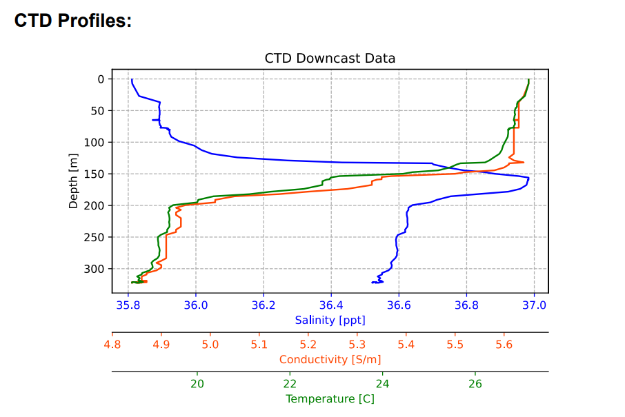
Problems
Any problems (either vehicle or science related) for the dive.

Events Breakdown Table
Count of all the Event Value’s recorded on the dive

Event Value Table
Each Event Value gets its own table with metadata for each individual event.

Vehicle Summary Report
This report is meant to be a summary of events that the ROV pilots can use to keep track of vehicle information. Most of the data here is more extensively covered in the Dive Summary Report. Vehicle Summary Report includes:
- Dive Timeline
- Dive Track
- Depth Profile
- Depth Sensor Comparison Plot
- ROV Compensator Pressure Data
- CTD Profiles
- Problems
- Watch Change Times
Frequently Asked Questions
Is it possible to log an event in the past?
Yes, at the bottom of each event template entry, there is an option for “Custom Time (UTC).” This can be used to adjust the time of the event, however Sealog will not grab past metadata for this entry.
Which ROV Depth value is most accurate?
Accuracy for depth is very much dependent on several factors (sensor calibration, depth, latitude, etc) your best option is to ask the MT’s on your cruise.
There are multiple positions in the metadata, which ones should I use?”
USBL position is solely based on the USBL underwater tracking of the vehicle. The Realtime Nav Data is SuBastian’s INS, which takes into account several inputs to make an educated calculation on position. In general, Realtime Nav Data is the position you should be using, but always ask the MT’s on your cruise.
Can I delete an event?
Only system administrators have the ability to delete an event, but you can ask an MT to delete it for you if needed.
Can I edit a past event?
You cannot edit a past event, but you can add a “comment” to the event where you can correct or add more information.
When I search for a known event, nothing is shown.
Great Question! We are still working on this one :)
Can I review the dive after it is over?
Yes, while on the ship you can review the dive. All of the data during the dive is being transferred to the PI-NAS, which you’ll have access to throughout the cruise. Shortly after the end of a dive, the dive summary and screengrabs will be available on the PI-Nas.
Can I replay a dive?
Under Review Cruises/Dives, after you’ve navigated to the correct year, cruiseID and dive number, you can select “Replay” which will allow you to step through every event logged during that dive.
Am I able to login to Salog after I am off the ship?
Currently this is not available, however all data associated with Sealog is found in your Cruise Data Folder under each dive.
What if I forgot to screen grab an event?
Sealog has a feature called “ASNAP” that takes a screengrab on a designated timed interval. The default is set to 1 per minute, but depending on your needs, you can make this more or less frequent. Speak to the Marine Technicians about changing your ASNAP interval.
Can we change templates after initial configuration?
Yes of course, you can change templates to better fit your needs anytime, but it’s recommended that you spend time prior to the first dive to get the dive templates to fit your needs. Certain templates (like sampling) need to be approved by Marine Technicians.
Can we use the same account for both instances of Sealog ( SuBastian and Falkor)?
No, currently these systems are independant and you will need to create a new user for each.